皆様こんにちは、System Center サポートチームの 石原 です。
System Center Operations Manager（以後 SCOM） には製品標準の管理パック テンプレートに [UNIX/Linuxログファイルの監視] があります。
[UNIX/Linuxログファイルの監視] を用いることで、UNIX/Linux サーバー内のログファイルに指定の文字列が出力された際にアラートを生成するログファイル監視を設定することができます。
SCOM は 5分間隔でログファイル内の文字列の存在チェックを行い、指定文字列が存在していた場合にアラートを発生させます。
既にアラート発生中の場合、発生中のアラートの繰り返し回数をカウントアップすることで、同じアラートが多数発生しないように制御しています。
本日は、この [UNIX/Linuxログファイルの監視] をカスタマイズして、指定文字列が出力されるたびに全件、個別のアラートとする手順を紹介いたします。
―――ご注意―――――――――――――――――――――――――――
以下にご案内しますUNIX-Linuxログファイルの監視-をカスタマイズ は、管理パックを直接編集する手順となります。
管理パックを直接編集する手順は注意が必要です。
本設定によって SCOM の動作に不備が発生した場合、設定実施前の状態の管理パックをインポートしてください。
こちらの点から、設定実施前の管理パックは別途バックアップとして個別にファイルを保存いただくことを推奨いたします。
―――――――――――――――――――――――――――
[UNIX/Linuxログファイルの監視] の設定手順と標準の動作
最初に通常の手順でログファイル監視を設定します。
SCOM コンソールにログインして、画面左下ペインの [作成] をクリックして、画面右ペインから [監視の追加ウィザード] をクリックします。
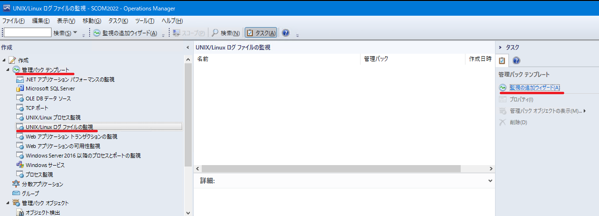監視の種類で [UNIX/Linuxログファイルの監視] を選択して [次へ] をクリックします。
[管理パック] は [新規] ボタンをクリックして、専用の新規の管理パックを作成・指定して [次へ] をクリックします。
※後述の手順で、このルールをエクスポートしてカスタマイズし、再インポートする手順があります。
その手順に備えて本ルール専用の管理パックを作成しておくことで、他の設定に影響しないようにします。
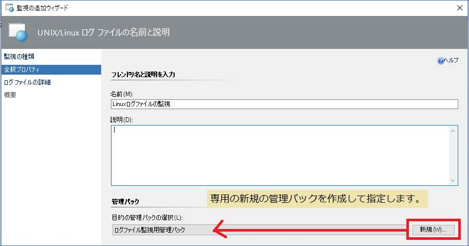[ログ ファイルの監視の詳細] ページでは、監視設定、ログファイルのパス、式などを設定して [次へ] をクリックします。
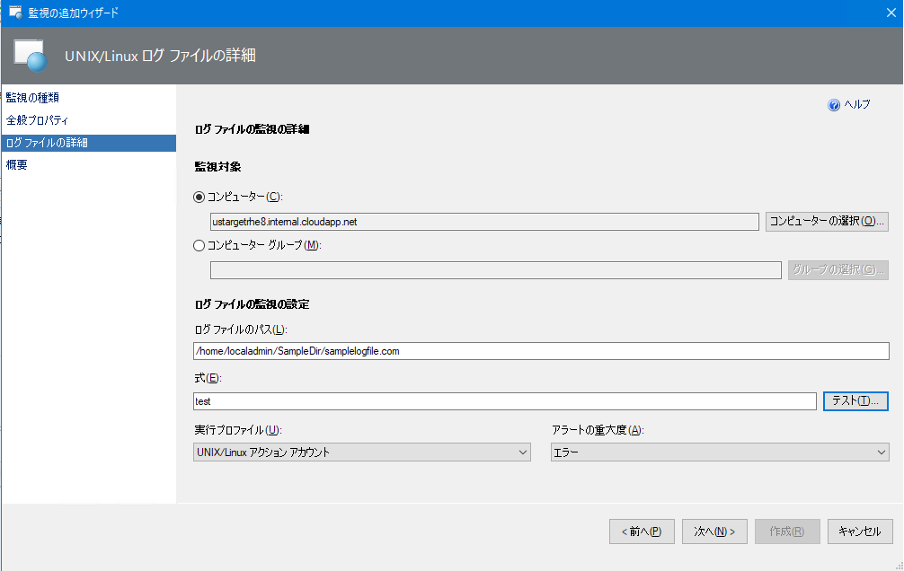[概要] ページで概要を確認して [作成] ボタンをクリックします。
以上で通常の [UNIX/Linuxログファイルの監視] の設定は完了です。
ログファイルに対象の文字列が出力されるとアラートが生成されます。
生成されたアラートは [アクティブなアラート] 画面で確認できます。
SCOM は 5分間隔でログファイル内の文字列の存在チェックしますので、その間に条件に合致する行が複数行存在した場合、以下のようにまとめて検知します。
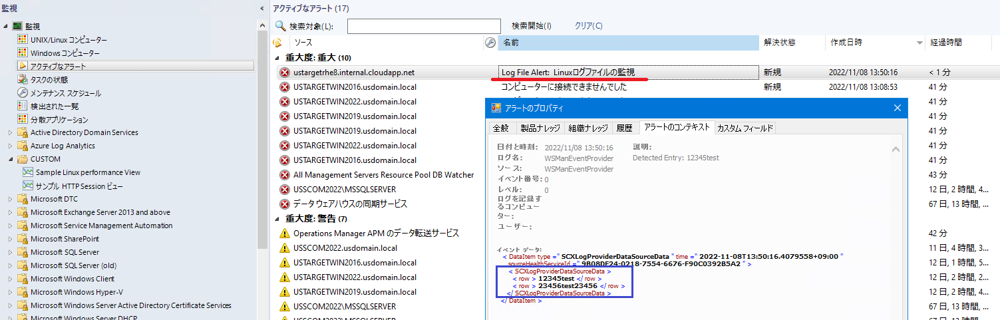
SCOM コンソールでアラートを閉じる前に再度、同じ文字列が出力された場合、発生中のアラートの繰り返し回数をカウントアップします。
この繰り返し回数を [アクティブなアラート] 画面で確認するためには、[ビューの個人用設定] で [繰り返し回数] を表示するようにします。
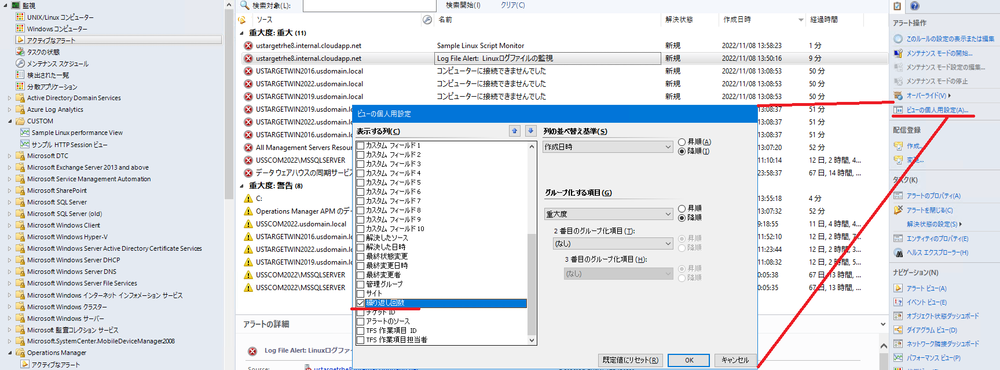
繰り返し回数がカウントアップされていることが分かります。
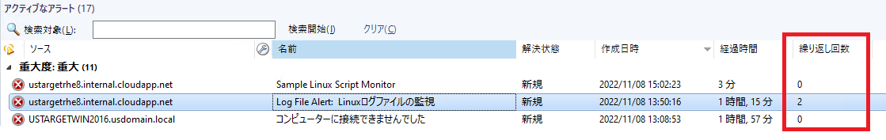
[UNIX/Linuxログファイルの監視] をカスタマイズして全件アラート生成させる
標準の [UNIX/Linuxログファイルの監視] をカスタマイズして、ログファイルに対象の文字列が出力されるごとに個別のアラートが生成されるようにします。
SCOM コンソールの画面左下ペインの [管理] をクリックして [管理] 画面を開きます。
[管理] -> [管理パック] -> [インストール済み管理パック] を選択し、画面中央の管理パック一覧から前述の No.3 で作成した [ログファイル監視用管理パック] を選択します。
画面右ペインから [管理パックのエクスポート] をクリックして、任意の場所に管理パックをエクスポートします。
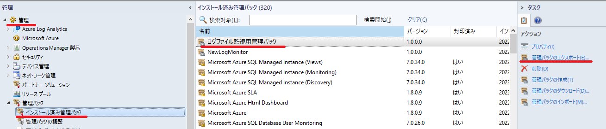エクスポートした管理パック ファイル （拡張子は xml です） をテキストエディターで開いて以下の3行を削除して上書き保存します。
XML ファイルの該当箇所
1 | <Suppression> |
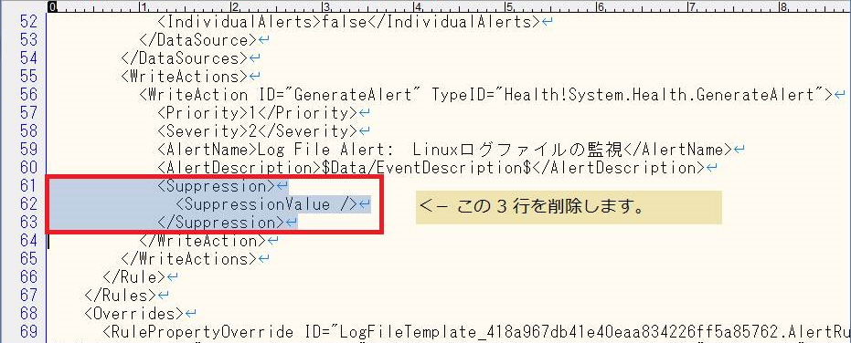
- [インストール済み管理パック] 画面で [管理パックのインポート] をクリックします。
- [追加] -> [ディスクから追加する] をクリックして、No.4 でカスタマイズした管理パック ファイル （ xml ファイル） を選択します。
- [インストール] ボタンをクリックして、カスタマイズした管理パックをインストールします。

このカスタマイズにより、既にアラートが発生中に同じ文字列がログファイルに出力された場合、SCOM は既存のアラートの繰り返し回数をカウントアップするのではなく、別のアラートが生成されます。
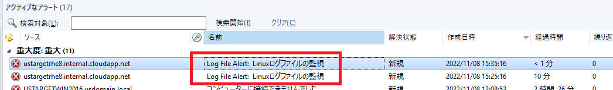
ルールの設定をオーバーライドして纏められたデータを個別のアラートとして生成する
SCOM は 5分間隔でログファイル内の文字列の存在チェックしますので、その間に条件に合致する行が複数行存在した場合、それらをまとめて検知します。
この仕様は標準の [UNIX/Linuxログファイルの監視] をカスタマイズしても同様で、以下の通りまとめて検知されます。
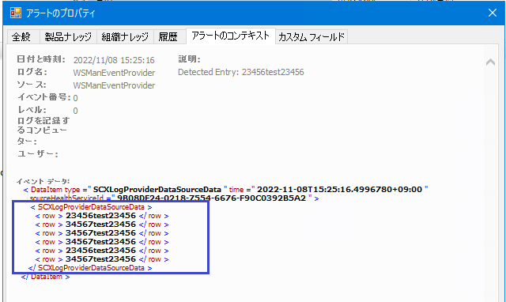
これらの纏められたアラートについて、[ルール] の [個別のアラート] をオーバーライドすることで、個別のアラートとして生成することができます。
[ルール] の [個別のアラート] をオーバーライドする手順は以下の通りです。
SCOM コンソールの画面左下ペインの [作成] をクリックして [作成] 画面を開きます。
[作成] -> [管理パック オブジェクト] -> [ルール] を選択して、検索欄に [ログファイル監視用管理パック] と入力して検索します。
[Unix/Linux コンピューター] 内のルールを選択して、画面右ペインから [オーバーライド] をクリックします。
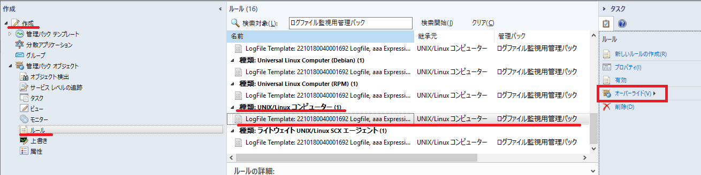[オーバーライド] -> [ルールのオーバーライド] -> [クラス UNIX/Linux コンピューターの特定のオブジェクト] を選択します。
ログファイル監視を行うコンピューターを選択して、オーバーライドのプロパティ画面を開きます。
[個別のアラート] を [真] に設定して、 [適用] -> [OK] をクリックして、オーバーライド設定を保存します。
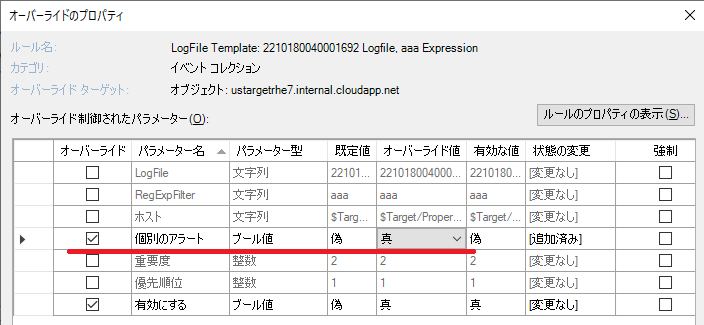
以上の設定により、指定の文字列がログファイルに出力されるたびに、たとえ短時間に条件に合致するログが複数出力された場合も纏められることもなく、全件、個別のアラートとして生成されます。
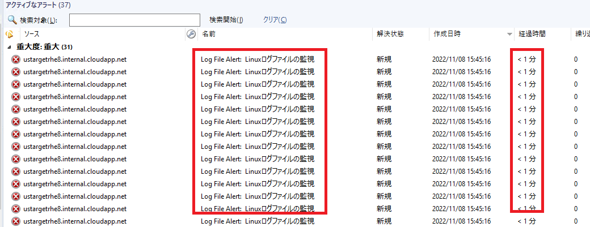
いかがでしょうか。
標準の [UNIX/Linuxログファイルの監視] は、検知した事象の対処が完了してアラートを手動で閉じるまでは、対象のログを再検知しても同じアラートが多数発生しないように制御しています。
基本的にはこの仕様が多くの現場の運用に最も適すると考えますが、ケースに応じてご参考にしていただければと存じます。
※本情報の内容（添付文書、リンク先などを含む）は、作成日時点でのものであり、予告なく変更される場合があります。